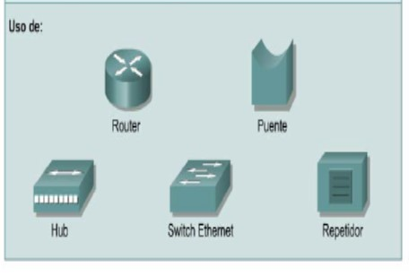

Redes de area local (LAN)
Una red de área local (Local Area Network, o LAN) es un grupo de equipos de cómputo y dispositivos asociados que comparten una línea de comunicación común o un enlace inalámbrico con un servidor. Normalmente, una LAN abarca computadoras y periféricos conectados a un servidor dentro de un área geográfica distinta, como una oficina o un establecimiento comercial. Las computadoras y otros dispositivos móviles utilizan una conexión LAN para compartir recursos como una impresora o un almacenamiento en red.
Las LAN se encuentran diseñadas para:
- Operar dentro de un área geográfica limitada
- Permitir el multiacceso a medios con alto ancho de banda
- Controlar la red de forma privada con administración local
- Proporcionar conectividad continua a los servidores locales
- Conectar dispositivos físicamente adyacentes
Las LAN permiten a las empresas aplicar tecnología informática para compartir localmente archivos e impresoras de manera eficiente, y posibilitar las comunicaciones internas.
>
BÚSQUEDAS RELACIONADAS
Redes de area amplia (WAN)
Redes de area metropolitana (MAN)
Redes de area de almacenamiento (SAN)